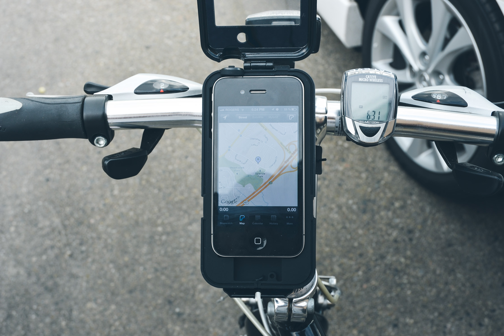
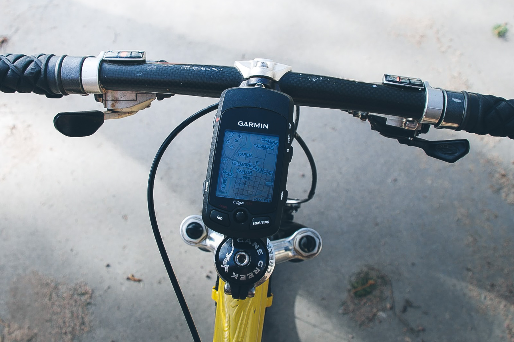
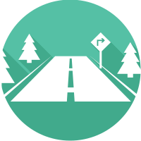
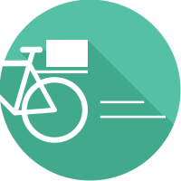
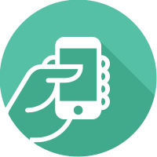
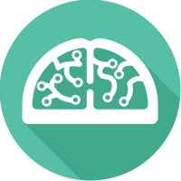
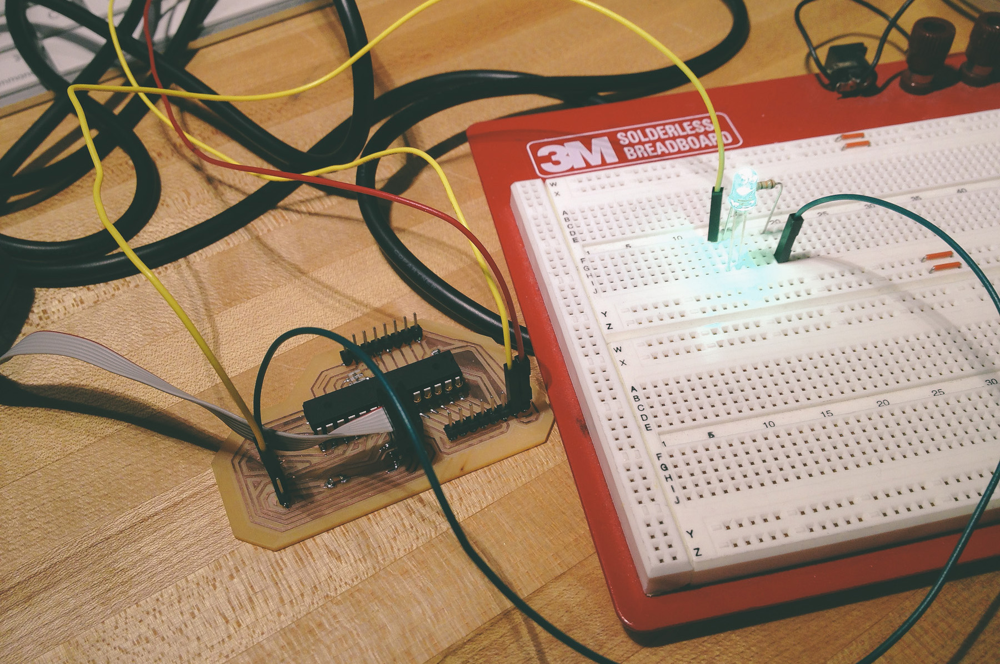
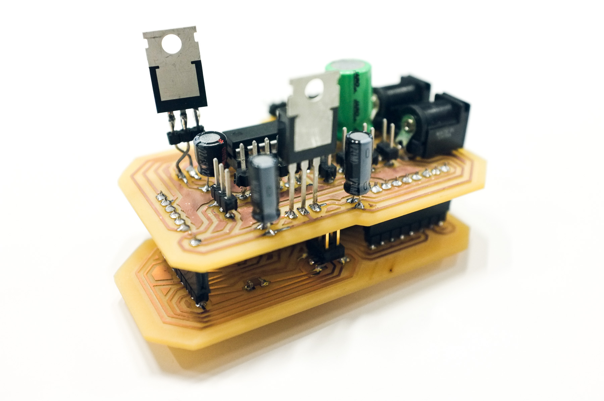
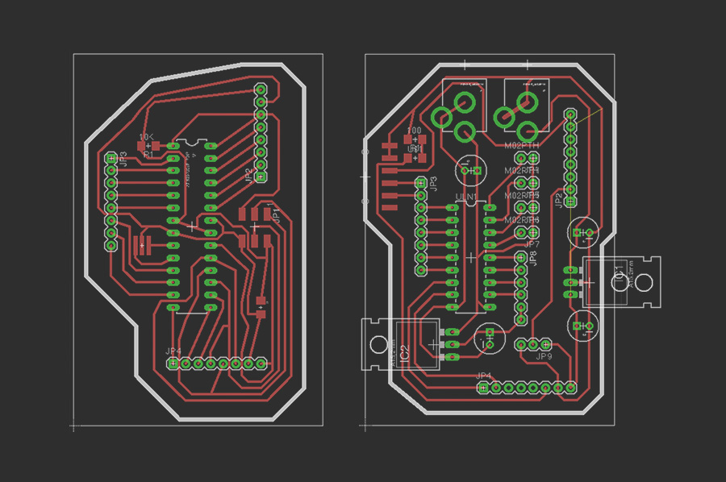
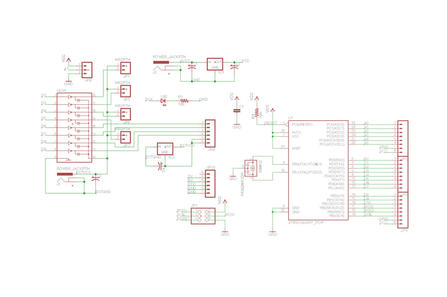

- 
- 
Using a gps while cycling is complicated and dangerous.

Takes your eyes off the road
Looking down for even just a few seconds to check for upcoming turns means being essentially blind for almost 100 feet of travel, which could be the difference between noticing the car ahead has slammed on its brakes.

Complicated to use in motion
Hand-held-sized screens and unsuitably small speakers make it hard to both see and hear what's coming up. Being aware of the next turn requires a good memory and constant babysitting.

Creates dependence
With such precise and strict navigation instructions, the amount of information and stress overloads the brain, making it hard to leave room to notice any surroundings and build a spatial memory.
Instinct is a new type of bicycle handlebars that directly & physically integrates gps directions in an unobtrusive, natural way by driving your intuition through haptic clues.

Keeps you alert & aware
By taking advantage of the nerve endings in your palms, Instinct is able to offload some of your more overworked senses like sight and sound so that you're able to then stay focused on the world around you and the road ahead.

Enhances intuition
With Instinct, taking the right turn feels right, while taking the wrong turn feels terrible--the handlebars feel heavy and ungreased and your hands feel off-kilter. Following your gut now has its own digital safety net that makes sure you stay on track.
Builds spatial memory
Without the stress of mentally filtering your surroundings for specific street names and landmarks and with your intuition in charge, you're free to look around you, get lost, and explore the city without winding up too far off the beaten track.
Instinct uses three haptic actuation methods to drive your sense of direction. The first creates dynamic friction on the twist of the fork to make turning the wrong way take just enough of a noticeable amount of increased effort, like it hasn't been greased.
The second method mechanically moves a heavy steel piece from the center to either ends of the bars to make turning correctly feel satisfying and to add a weighty hesitance to the wrong direction.
Lastly, pneumatic airbags hidden underneath each handle grip expand and contract to off-kilter the hands in order to create a premonition for upcoming turns.
While there are a large variety of other types of haptic feedback that could have been chosen, like vibration, it's important to remember the rumbling, busy, potentially gloved context that this product would be used in. One of the first explorations involved similar pneumatic feedback seen in the final design.
Focal Wheel
Shape-changing, haptic automotive steering wheel prototype
During the weekend before one of the Media Lab's sponsor weeks, I worked with Felix Heibeck to design and build an application-based demo of the new soft-materials Pneui project my research group has been exploring.
Our implementation was aimed at the driving context but after playing around with it, we realized the cycling context had a much more unsolved use case and problem space. This prompted an exploration into how people even use and hold a bicycle while riding and figuring out ways to measure and adapt to those differences.
I also created a quick and dirty peel'n'stick capacitive touch sensing system that I could place on a bar, pole, or existing handlebar and would give real-time readings as to where someone was placing their hands.
This allowed me to record some hard numbers as well as gave me the opportunity to have the final prototype customize on the fly where the haptic feedback should be sent. With that in place, I moved onto molding the silicone airbags to test inflation properties and animations.
Once that had been casted, molded, and tested, I moved into creating the final prototype to be used to test out my ideas and really communicate the feeling of the experience I'd been hypothesizing.

- 
- 
- 
- 
The biggest challenge for the final prototype was by far the electronics. After a couple of failures and iterations on the electrical engineering and board design, I decided to go with a somewhat modular system. The main processor and common components were laid out on a separate bottom layer while the motors, air valves, and second power supply were kept on their own layer on top.
The final board involved a stepper motor to create the friction on the fork, a potentiometer to measure the turning value, and 4 air valves to pump air into the airbags and pneumatically actuate the steel piece.
Partway into the project, I also realized that a fully functioning system like this would need some method of notifying the riders, drivers, and pedestrians in the surrounding area about upcoming turns as well.
A safe rider is a predictable rider. While they can use hand signals, a more visible & automatic solution is useful at night.
To maintain visibility and have a place to store extra electronics, I began explorations into integrating a turn signal into a hybrid tail light / fender.
I created a rough prototype of a thin, lightweight, strong composite material using marine epoxy and burlap fabric. The surface texture didn't come out as smooth as I'd like nor is the color ideal, so I'd like to explore different fabrics that are smoother and darker.
For the light itself, there were few options on the market (especially for bicycles) that had integrated turn signal functions without being ugly, bulky, and unwieldy. I decided to use red dye, a custom wax mold, and Smooth-on's Crystal Clear urethane plastic to mold my own lens.
I also began prototyping the electronics for the light itself. I designed the board to have 4 led's that could be either full-bright on, pulsed in a wave in either direction, or off. You can view more details about the board's progress on my electronics page.
The full-fledged system still has a lot more work to be done, but I truly believe that a haptic solution for bicycle navigation would do wonders to help people open their eyes and see the world around them as it passes by.